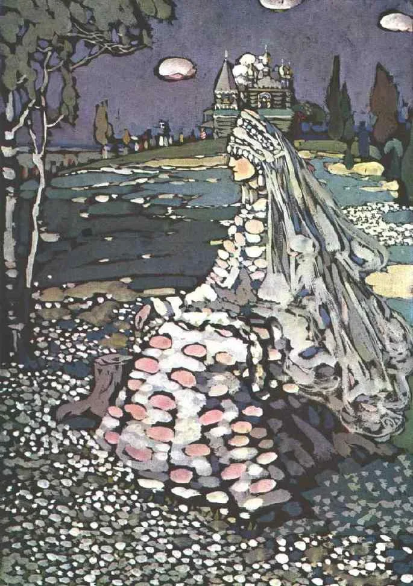

;
Beleza Russa em uma Paisagem (1905)

Durante o período que concerne os anos de 1906 a 1908, ele viajou pela Europa, tendo feito uma exposição em Paris, e acabou se fixando com Gabriele na Baviera, Alemanha. Talvez por isso, as obras pintadas por Kandinsky, na época, retratavam várias paisagens e espaços urbanos.